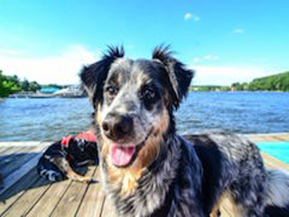

神经网络不断刷新着图像识别的准确率纪录。本页主要介绍如何构建一个基于网页的应用程序，用著名的VGG-16网络实现推断，对用户上传的图像进行分类。
目录
从2010年开始，ImageNet每年都会举办一场挑战赛，参赛的研究团队用ImageNet数据集作为训练数据，提出各种图像分类解决方案。ImageNet目前有数百万幅已标记的图像，是全世界最大的高质量图像数据集之一。牛津大学的Visual Geometry Group（视觉几何研究组）在2014年的比赛中取得了优异成绩，他们采用的网络架构有两种：16层卷积神经网络VGG-16和19层卷积神经网络VGG-19。
结果如下：
神经网络应用的第一步是训练。在训练过程中，输入数据（此处为图像）进入网络，随后网络的输出或预测结果会与预期结果（即图像的标签）进行比较。每次完成对数据的迭代后，网络的权重会得到调整，以减少预测的误差率——也就是说，权重调整后，网络预测结果与实际图像标签的匹配率可得到改善。（用数百万幅图像对一个大型网络进行训练需要消耗大量计算资源，因此有必要发布此处介绍的预训练网络。）
训练完毕后，网络可以用于推断，即对其读取的数据进行预测。推断恰好是一种不需要这么多计算资源的过程。对于VGG-16和其他架构而言，开发者可以下载预训练的模型直接使用，而无需掌握模型调试与训练的必要技能。预训练模型的加载和预测应用相对比较简单，本页将作详细介绍。
我们将在另一篇教程中介绍如何加载此类模型并进一步训练。
0.9.0版（0.8.1-SNAPSHOT）的Deeplearning4J配有一个全新的原生模型库。您可以阅读deeplearning4j-zoo模块的内容，了解更多关于使用预训练模型的信息。此处我们需要加载一个预训练的VGG-16模型，用经过ImageNet数据集训练后得到的权重来初始化：
ZooModel zooModel = new VGG16();
ComputationGraph vgg16 = zooModel.initPretrained(PretrainedType.IMAGENET);
Deeplearning4J还配有专门面向Keras的模型导入工具。我们的模型导入器可将您的Keras网络配置及权重转换为Deeplearning4J的格式。Keras的顺序（Sequential）模型和标准函数式（Functional）模型都可以导入DL4J。导入模型的代码可如此编写：
ComputationGraph model = KerasModelImport.importKerasModelAndWeights(modelJsonFilename, weightsHdf5Filename, enforceTrainingConfig);
如果导入的预训练模型仅用于推断，那么应当设置enforceTrainingConfig=false。目前尚不支持的仅用于训练的模型配置会触发警告消息，但模型导入功能会继续运行。
就数据摄取和预处理而言，您可以选择手动流程或者助手功能。VGG-16形式的图像处理助手功能为TrainedModels.VGG16.getPreProcessor以及VGG16ImagePreProcessor()。（请记住：用于推断的图像的预处理方式必须和训练图像的处理方式相同。）
缩放工作可以由DataVec的原生图像加载器完成。
均值消减可以手动操作，或者由助手功能完成。
如果读取的是图像目录，请使用DataVec的ImageRecordReader
ImageRecordReader rr = new ImageRecordReader(224,224,3);
如果读取的是单一图像，请使用DataVec的NativeImageLoader
NativeImageLoader loader = new NativeImageLoader(224, 224, 3);
INDArray image = loader.asMatrix(file);
如果用DataVec的RecordReader加载一个目录
DataSetPreProcessor preProcessor = TrainedModels.VGG16.getPreProcessor();
dataIter.setPreProcessor(preProcessor);
如果采用NativeImageLoader加载图像
DataNormalization scaler = new VGG16ImagePreProcessor();
scaler.transform(image);
网络加载完毕后，您应当验证它能按预期的方式工作。请注意，ImageNet并非为人脸识别而设计，所以最好用大象、狗或者猫的图片来测试。
如果您想将运行结果与Keras的输出作比较，请分别在Keras和DeepLearning4J中加载模型，然后比较两者的输出。最终的结果应该相当接近。如果Keras表示该图像有35.00094%的概率是大象，而DeepLearning4j输出的概率为35.00104%，这很可能只是取整误差，而不是因为模型之间存在实际差异。
while (dataIter.hasNext()) {
//预测数组
DataSet next = dataIter.next();
INDArray features = next.getFeatures();
INDArray[] outputA = vgg16.output(false,features);
INDArray output = Nd4j.concat(0,outputA);
//对数据集中的每幅图像，显示排名前五位的预测结果
List<RecordMetaData> trainMetaData = next.getExampleMetaData(RecordMetaData.class);
int batch = 0;
for(RecordMetaData recordMetaData : trainMetaData){
System.out.println(recordMetaData.getLocation());
System.out.println(TrainedModels.VGG16.decodePredictions(output.getRow(batch)));
batch++;
}
//缓冲流加载器给出提示，请求指定测试图像的
// 文件路径
InputStreamReader r = new InputStreamReader(System.in);
BufferedReader br = new BufferedReader(r);
for (; ; ){
System.out.println("type EXIT to close");
System.out.println("Enter Image Path to predict with VGG16");
System.out.print("File Path: ");
String path = br.readLine();
if ("EXIT".equals(path))
break;
System.out.println("You typed" + path);
// 此处代码将已提交图像转换为INDArray
// 进行均值消减并运行推断
File file = new File(path);
NativeImageLoader loader = new NativeImageLoader(224, 224, 3);
INDArray image = loader.asMatrix(file);
DataNormalization scaler = new VGG16ImagePreProcessor();
scaler.transform(image);
INDArray[] output = vgg16.output(false,image);
System.out.println(TrainedModels.VGG16.decodePredictions(output[0]));
加载模型并测试完毕后，请用DeepLearning4J的ModelSerializer保存模型。和用Keras加载模型相比，用ModelSerializer加载模型消耗的资源更少。我们建议您加载一次，然后将模型保存为DeepLearning4J格式，以便之后再次使用。
adsad
File locationToSave = new File("vgg16.zip");
ModelSerializer.writeModel(model,locationToSave,saveUpdater);
File locationToSave = new File("/Users/tomhanlon/SkyMind/java/Class_Labs/vgg16.zip");
ComputationGraph vgg16 = ModelSerializer.restoreComputationGraph(locationToSave);
下列HTML代码生成的表单元素可以让用户选择一幅图像并上传至我们的服务器。以下示例并未连接至服务器。（尚未完成！）
表单元素的动作属性是用户所选图像的上传URL。
我们选择用Spark Java编写网页应用，因为它比较简单明了。您只需将Spark Java代码添加至一项已经编写好的类中即可。其他选择还有很多。
无论您选用哪种Java网页框架，以下步骤都是相同的。
可正常工作的最终代码如下所示。
这个类运行时会在4567端口上启动Jetty网页服务器监听。
网页应用的启动时间大约和神经网络的加载时间相同。加载VGG-16大约需要四分钟。
一旦网络开始运行，其RAM使用量大约会以60MB为单位递增，直至达到4G，此时垃圾回收功能会开始清理内存。我们在一个AWS t2-large实例上运行VGG-16，测试了大约一周时间，运行状况很稳定。或许还可以使用更小的AMI。
package org.deeplearning4j.VGGwebDemo;
import org.datavec.image.loader.NativeImageLoader;
import org.deeplearning4j.nn.graph.ComputationGraph;
import org.deeplearning4j.nn.modelimport.keras.trainedmodels.TrainedModels;
import org.deeplearning4j.util.ModelSerializer;
import org.nd4j.linalg.api.ndarray.INDArray;
import org.nd4j.linalg.dataset.api.preprocessor.DataNormalization;
import org.nd4j.linalg.dataset.api.preprocessor.VGG16ImagePreProcessor;
import javax.servlet.MultipartConfigElement;
import java.io.File;
import java.io.InputStream;
import java.nio.file.Files;
import java.nio.file.Path;
import java.nio.file.StandardCopyOption;
import static spark.Spark.*;
/**
* Created by tomhanlon on 1/25/17.
*/
public class VGG16SparkJavaWebApp {
public static void main(String[] args) throws Exception {
// Set locations for certificates for https encryption
String keyStoreLocation = "clientkeystore";
String keyStorePassword = "skymind";
secure(keyStoreLocation, keyStorePassword, null,null );
// Load the trained model
File locationToSave = new File("vgg16.zip");
ComputationGraph vgg16 = ModelSerializer.restoreComputationGraph(locationToSave);
// make upload directory for user submitted images
// Images are uploaded, processed and then deleted
File uploadDir = new File("upload");
uploadDir.mkdir(); // create the upload directory if it doesn't exist
// form this string displays an html form to select and upload an image
String form = "<form method='post' action='getPredictions' enctype='multipart/form-data'>\n" +
" <input type='file' name='uploaded_file'>\n" +
" <button>Upload picture</button>\n" +
"</form>";
// Spark Java configuration to handle requests
// test request, the url /hello should return "hello world"
get("/hello", (req, res) -> "Hello World");
// Request for VGGpredict returns the form to submit an image
get("VGGpredict", (req, res) -> form);
// a Post request (note the form uses http post) for
// getPredictions (note the action attribute or the form)
// Page prints results and then another form
post("/getPredictions", (req, res) -> {
Path tempFile = Files.createTempFile(uploadDir.toPath(), "", "");
req.attribute("org.eclipse.jetty.multipartConfig", new MultipartConfigElement("/temp"));
try (InputStream input = req.raw().getPart("uploaded_file").getInputStream()) { // getPart needs to use same "name" as input field in form
Files.copy(input, tempFile, StandardCopyOption.REPLACE_EXISTING);
}
// The user submitted file is tempFile, convert to Java File "file"
File file = tempFile.toFile();
// Convert file to INDArray
NativeImageLoader loader = new NativeImageLoader(224, 224, 3);
INDArray image = loader.asMatrix(file);
// delete the physical file, if left our drive would fill up over time
file.delete();
// Mean subtraction pre-processing step for VGG
DataNormalization scaler = new VGG16ImagePreProcessor();
scaler.transform(image);
//Inference returns array of INDArray, index[0] has the predictions
INDArray[] output = vgg16.output(false,image);
// convert 1000 length numeric index of probabilities per label
// to sorted return top 5 convert to string using helper function VGG16.decodePredictions
// "predictions" is string of our results
String predictions = TrainedModels.VGG16.decodePredictions(output[0]);
// return results along with form to run another inference
return "<h4> '" + predictions + "' </h4>" +
"Would you like to try another" +
form;
//return "<h1>Your image is: '" + tempFile.getName(1).toString() + "' </h1>";
});
}
}
Skymind公司养了几只猫，以下是VGG-16对其中之一的照片的预测结果，网络可能从未见过这只猫。（因为他很害羞……）
16.694832%, tabby 7.550286%, tiger_cat 0.065847%, cleaver 0.000000%, cleaver 0.000000%, cleaver
VGG-16对下面这只来自互联网的狗给出了相当准确的预测结果，网络在训练过程中有可能见过这幅图片。

53.441956%, bluetick 17.103373%, English_setter 5.808368%, kelpie 3.517581%, Greater_Swiss_Mountain_dog 2.263778%, German_short-haired_pointer'